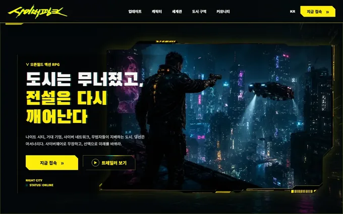
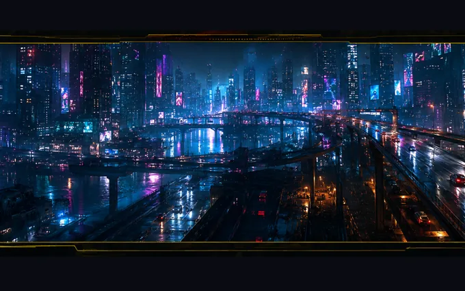
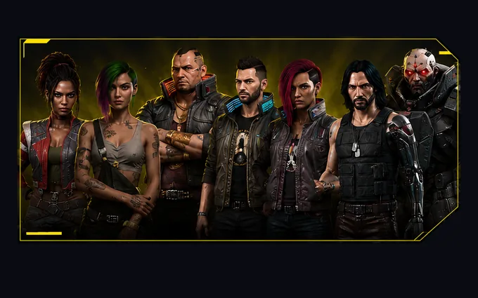
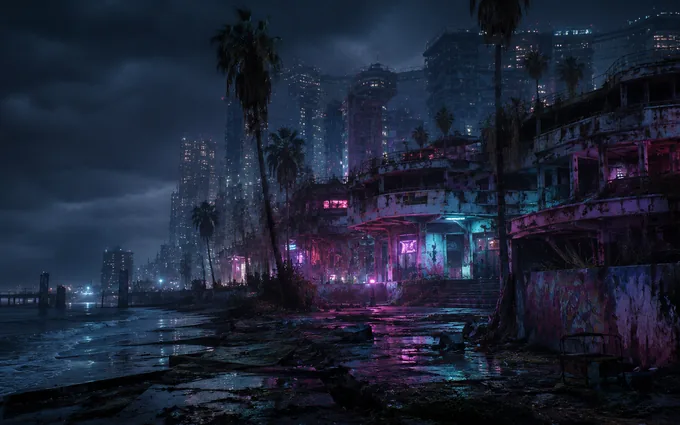

Overview
도시는 무너졌고, 전설은 다시 깨어난다
게임 사이버펑크 2077의 세계관을 인터랙티브 아카이브로 재해석한 팬 리디자인 콘셉트입니다. 나이트 시티의 세계관·도시 구역·전설적 캐릭터를 탐험하도록 구성하고, 영상 히어로와 스크롤 인터랙션으로 몰입감을 더했습니다.
세계관 구성부터 아트디렉션·인터랙션 설계까지 직접 다루며, 다크 네온 무드의 비주얼을 반응형으로 완성했습니다.
Problem & Goal
왜 이렇게 만들었나
단순한 팬 페이지가 아니라 원작의 무드를 웹에서 재현하는 것을 목표로, 만들기 전에 방향을 먼저 정리했습니다.
Design Guide
디자인 가이드
사이버펑크 특유의 무드를 일관되게 유지하기 위해 키워드부터 컬러·타이포·컴포넌트까지 규칙을 정의하고 전 섹션에 반복 적용했습니다.
어둡고 강렬한 디스토피아 감성을 담기 위해 cyber · neon · glitch를 중심 키워드로 잡고 모든 화면의 무드 기준으로 삼았습니다.
딥 블랙 베이스에 옐로·시안·마젠타 네온을 포인트로 얹어, 어두운 화면 위에서 요소가 빛나 보이도록 대비를 강하게 구성했습니다.
#05060A
#0C0E16
#FCEE0A
#29E7FF
#FF2E97
굵은 대문자 타이틀과 읽기 쉬운 본문을 조합해, 타이틀은 강렬하게 · 정보는 명확하게 보이도록 구성했습니다.
모서리를 자른 네온 버튼, 네온 보더 카드, 시안 아웃라인 태그를 반복 사용해 사이버펑크 UI의 통일감을 유지했습니다.
Sections & Flow
섹션 구성 · 흐름




Build
구현 포인트
영상 히어로 & 기기별 재생
배경 영상과 포스터 폴백을 두고, PC는 hover·모바일은 뷰포트 진입 자동재생으로 분기해 어디서나 자연스럽게 재생.
스크롤 인터랙션
IntersectionObserver로 섹션 진입을 감지해 등장 애니메이션과 캐릭터·구역 전환을 트리거.
SVG 도시 지도
사진과 미니맵을 잇는 연결선을 SVG 좌표로 실시간 계산해, 스크롤·리사이즈에도 정확히 유지.
라이브러리 없는 네온 무드
순수 CSS/JS만으로 글리치 전환·네온·노이즈와 clip-path 각진 UI를 직접 구현해 사이버펑크 분위기 연출.
Challenges
막혔던 부분 · 해결
PROBLEMPC와 모바일에서 히어로 영상 재생 방식이 달라야 한다.
해결 → PC는 hover, 모바일은 뷰포트 진입 시 자동재생으로 분기해 어느 환경에서도 자연스럽게 재생되도록 했습니다.
PROBLEM도시 지도에서 사진과 미니맵을 자연스럽게 잇고 싶다.
해결 → SVG 좌표를 실시간 계산해 연결선을 그려, 스크롤·리사이즈에도 정확히 유지되도록 구현했습니다.
PROBLEM라이브러리 없이 사이버펑크 무드를 만든다.
해결 → 순수 CSS/JS만으로 글리치 전환·네온·노이즈 효과를 직접 구현했습니다.
Results
숫자로 보는 작업
Review
돌아보며
프레임워크 없이 영상·글리치·SVG 인터랙션을 직접 구현한 프로젝트였습니다. 과정을 배운 점·아쉬운 점·개선 방향으로 정리했습니다.
배운 점
라이브러리 없이 복잡한 인터랙션을 직접 구현하며 JS·DOM·이벤트와 IntersectionObserver를 깊이 이해했습니다.
아쉬운 점
초반 이미지가 무거웠고, 영상·효과가 많아 저사양 기기에서의 최적화를 더 챙기지 못한 점이 아쉽습니다.
개선 방향
후반 93% 경량화 경험을 살려, 처음부터 성능 예산을 잡고 지연 로딩·프리로드를 설계에 넣고 싶습니다.